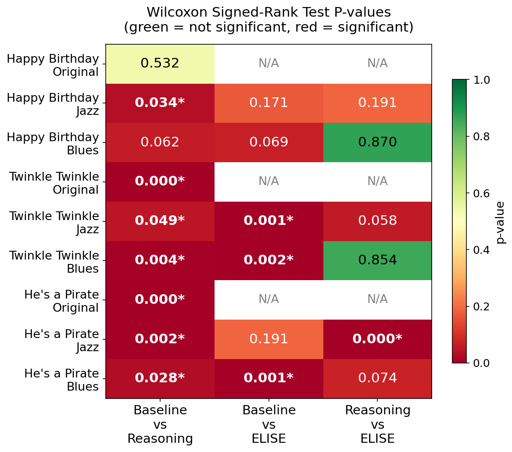

Embodied Stylistic Planning via Structured Reasoning and Execution Feedback
March 2, 2026
Abstract
Enabling robots to translate high-level human intent into physically grounded action remains a central challenge in human-robot interaction. Although recent vision-language and large language models can generate structured plans from natural language, they lack embodiment awareness and often produce physically infeasible or perceptually misaligned behavior. This gap is particularly pronounced in expressive tasks, where users specify stylistic qualities (e.g., “play this in jazz style”) that must be realized through temporally precise, constraint-bound motor control. Robotic piano performance exemplifies this challenge, requiring high-frequency dexterous execution under strict hardware limitations. We present ELISE, a structured multi-stage VLM framework for style-conditioned dexterous skill synthesis under embodiment constraints. Rather than collapsing intent interpretation, hardware adaptation, and control generation into a single prompt, ELISE decomposes reasoning into sequential stages spanning musical intent analysis, embodiment-constrained planning, robot-API-level code generation, and iterative refinement using execution-derived feedback. This staged design enables explicit alignment between abstract stylistic intent and physically feasible execution while maintaining transparency across reasoning layers. We evaluate ELISE on a humanoid robot equipped with constrained dexterous hands, performing three songs under original, jazz, and blues styles. In a blind ranking study across 24 real-robot performances, the proposed framework significantly improves both melodic faithfulness and perceptual style alignment compared to direct single-prompt code generation.
Method
We present ELISE, a structured multi-stage reasoning frame-work for aligning high-level stylistic intent with physically feasible dexterous robot execution. Rather than using a single prompt to jointly interpret intent, enforce hardware constraints, and generate control code, ELISE decomposes reasoning into sequential stages operating at distinct levels of abstraction. Each stage produces a structured intermediate representation that is explicitly passed to the next, enabling clear separation between perceptual reasoning, embodiment grounding, and low-level execution.

Figure 1: Overview of the ELISE framework architecture.
ELISE Framework Layers:
- Layer 1: Musical Intent Analysis. This stage interprets the instruction at a robot-agnostic level, generating a structured intent representation that specifies the complete note and chord progression, rhythmic structure and tempo, and stylistic transformations implied by the user's input.
- Layer 2: Embodiment-Constrained Planning. This stage grounds the intent representation in the robot's physical profile to produce a feasible execution plan, specifying for each note event: target key, assigned finger, wrist position, onset time, and duration.
- Layer 3: Code Generation. The feasible execution plan is translated into executable Python code using a robot control API, enforcing sequencing rules to avoid actuation saturation and ensuring physically sound motions.
- Layer 4: Execution-Grounded Refinement. After execution, the robot's performance is transcribed into MIDI and compared against the planned sequence. Deviations such as missed notes, timing drift, or velocity inconsistencies are detected, and this outcome-based feedback is used to refine stylistic planning in real hardware behavior.
Experiments
Experiments were conducted on a RealMan humanoid platform equipped with 6-DOF arms and OYMotion ROHand dexterous hands. All performances were executed using a single hand positioned at a fixed height relative to the piano keyboard. Execution outcomes were recorded via direct MIDI output from the digital piano, which served as the structured feedback signal for iterative refinement. The study encompassed hard constraints (thumb excluded, white keys only) and soft constraints (e.g., repositioning latency, actuation bandwidth). Three songs were evaluated under three style conditions (original, jazz, and blues), comparing Baseline, Reasoning Only, and ELISE (Full).
User Study:
To evaluate perceptual style alignment, a blind ranking study was conducted with 22 participants (6 female, 16 male; age 18-40). Participants completed a web-based survey, ranking robot performance videos based on how faithfully they reflected the intended style. Rankings were converted to numerical scores, and statistical significance was assessed using paired Wilcoxon signed-rank tests. Two hypotheses were evaluated: (H1) structured reasoning improves perceived style alignment relative to single-prompt generation, and (H2) execution-grounded feedback further improves alignment by resolving embodiment-induced errors.
Results

Figure 2: User study results of perceived alignment of styles. Average ranking scores (with standard error) of different method for each style across the three tested songs are plotted.
Across most song-style combinations, structured methods (Reasoning and Full ELISE) outperformed the Baseline in perceptual rankings. The largest performance gaps occurred between Baseline and structured methods, indicating that staged reasoning substantially improves style coherence. Improvements were style-dependent and not uniform across all songs. For Original Style, Reasoning outperformed Baseline. Blues Style showed clear separation, with Reasoning and Full ELISE outperforming Baseline. Jazz Style exhibited variability, with Full ELISE achieving the highest ranking in two of three jazz conditions. Structured reasoning improves style alignment, particularly for rhythmically defined styles, with partial support for execution-grounded feedback.

Figure 4: Comparison plots for Happy Birthday across different styles and methods.

Figure 5: Comparison plots for He's a Pirate across different styles and methods.

Figure 6: Comparison plots for Twinkle Twinkle Little Star across different styles and methods.
Original Style
The original condition isolates melodic coherence without additional stylistic modification. For He's a Pirate, over 90% of participants ranked the Reasoning variant above Baseline (p < 0.001), and Twinkle Twinkle Little Star exhibited a similarly strong preference. One participant noted that "The rhythm from [Reasoning] was more accurate and sounds more like the song," highlighting perceived improvements in timing and melodic fidelity. In contrast, Happy Birthday showed no statistically significant difference between methods, with participants frequently reporting that the two renditions sounded similar. These findings suggest that structured reasoning provides the greatest benefit for melodically or rhythmically demanding pieces, where single-prompt generation may struggle to maintain accurate sequencing and temporal consistency. For simpler songs with repetitive structure, the baseline often produces sufficiently coherent outputs, reducing perceptual differences between methods.
Blues Style
Blues produced the clearest separation between methods. Both Reasoning and Full ELISE consistently outperformed Baseline across all songs, with most comparisons reaching significance. Our data and users' reasoning followed this idea, where they stated the structured methods were "smoother and more melancholic" that shows the traits of a Blues version. Blues is stylistically well-defined: slower tempo, shuffle rhythm, and sustained phrasing. These features map cleanly onto explicit timing and duration adjustments that the staged pipeline can model while respecting hardware timing limits. MIDI analysis confirmed that structured methods produced longer note durations and more consistent rhythmic grouping compared to Baseline. Interestingly, Reasoning and Full ELISE did not differ significantly, indicating that once embodiment constraints are properly integrated during planning, additional feedback provides limited gains for this style.
Jazz Style
Jazz exhibited the greatest variability across songs. For Twinkle Twinkle Little Star, Full ELISE was clearly preferred over both alternatives. For He's a Pirate, the Reasoning-only variant performed worst below Baseline—while Full ELISE recovered to the top ranking. This suggests that reasoning without feedback may over-constrain phrasing, whereas execution feedback helps restore timing fluidity under hardware limits. For Happy Birthday, Baseline achieved the highest mean score, though no difference was statistically significant. Jazz is inherently less constrained than blues: swing timing, syncopation, and harmonic substitution admit multiple valid interpretations. Users quoted that "[Baseline] vs [Reasoning/Elise] were very similar" and they couldn't tell the difference. In such settings, the irregularity of unconstrained generation may sometimes be perceived as stylistically plausible. Nevertheless, Full ELISE achieved the highest ranking in two of three jazz conditions. The results support H1: structured reasoning improves style alignment relative to single-prompt generation, particularly for rhythmically defined styles. H2 receives partial support: execution feedback yields additional gains in styles where embodiment constraints significantly affect phrasing (e.g., jazz), but provides smaller benefits when style features are easily captured during planning (e.g., blues). Overall, the findings demonstrate that perceptual style alignment in dexterous tasks depends not only on symbolic reasoning but also on iterative grounding in real hardware execution.

Figure 3: Wilcoxon signed-rank test P-values for user study results.
Case Study: Für Elise
To further illustrate the qualitative behavior of ELISE, a case study on Für Elise was presented under both Original and Blues style conditions. The study visualized executed note sequences and timing patterns produced by each method. For the Original Style, ELISE explicitly adapted the melody to embodiment constraints by mapping black keys to the nearest feasible white keys while preserving musical structure. In Blues Style, ELISE variants produced more temporally consistent phrasing and clearer shuffle-like grouping, with the Full ELISE model adjusting onset timing to align notes more coherently with the beat while respecting actuation constraints. Perceptual evaluation showed that both Reasoning-only and Full ELISE variants were consistently preferred over Baseline, with primary perceptual gains arising from structured embodiment-aware planning.

Figure 7: Note comparison chart of Für Elise in Original (top) and Blues (bottom) styles.

Figure 8: User study results of Für Elise.
Conclusion
We presented ELISE, a multi-stage language-conditioned framework that enables stylistic robotic piano performance without task-specific training data. By decomposing reasoning into musical intent analysis, embodiment-aware planning, executable code generation, and execution-grounded refinement, ELISE demonstrates that structured reasoning substantially improves perceptual style alignment over single-prompt generation. Incorporating MIDI-based feedback further reduces discrepancies between planned and executed performance by grounding corrections in observed note timing and duration. These results suggest that staged prompt reasoning, combined with explicit embodiment modeling, provides a practical alternative to data-intensive policy learning for expressive dexterous manipulation. The current system has several limitations, including evaluation primarily on short musical excerpts and sensitivity to prompt phrasing. Future work includes extending to full-length pieces, improving prompt robustness, and enabling coordinated two-hand performance, as well as exploring scaling to other high-frequency dexterous tasks.
BibTeX
@article{anonymous2026embodied,
title={Embodied Stylistic Planning via Structured Reasoning and Execution Feedback},
author={Anonymous Authors},
journal={Anonymous Journal},
year={2026},
volume={1},
number={1},
pages={1--8},
}